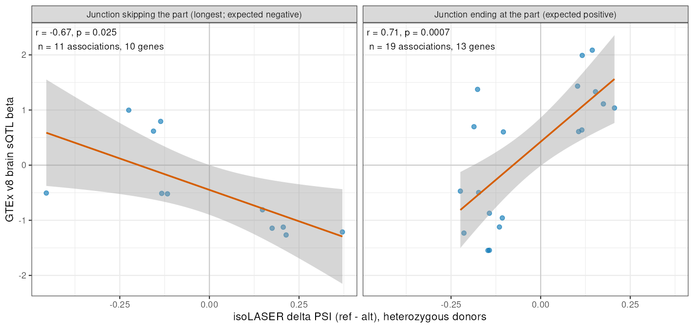
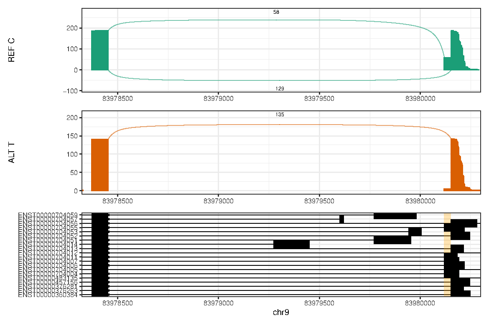
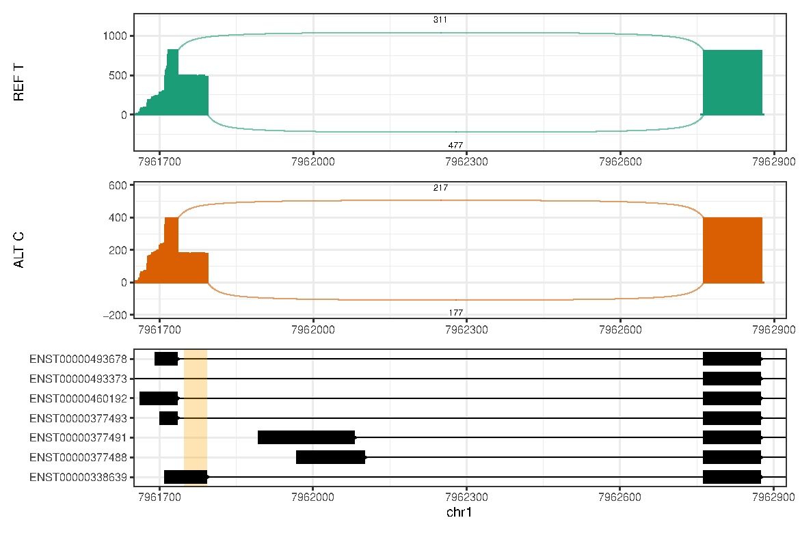

Genome-wide allele-specific splicing
XSun
2026-09-28
Last updated: 2026-10-01
Checks: 6 1
Knit directory: long_read_rna/
This reproducible R Markdown analysis was created with workflowr (version 1.7.1). The Checks tab describes the reproducibility checks that were applied when the results were created. The Past versions tab lists the development history.
The R Markdown file has unstaged changes. To know which version of
the R Markdown file created these results, you’ll want to first commit
it to the Git repo. If you’re still working on the analysis, you can
ignore this warning. When you’re finished, you can run
wflow_publish to commit the R Markdown file and build the
HTML.
Great job! The global environment was empty. Objects defined in the global environment can affect the analysis in your R Markdown file in unknown ways. For reproduciblity it’s best to always run the code in an empty environment.
The command set.seed(20260908) was run prior to running
the code in the R Markdown file. Setting a seed ensures that any results
that rely on randomness, e.g. subsampling or permutations, are
reproducible.
Great job! Recording the operating system, R version, and package versions is critical for reproducibility.
Nice! There were no cached chunks for this analysis, so you can be confident that you successfully produced the results during this run.
Great job! Using relative paths to the files within your workflowr project makes it easier to run your code on other machines.
Great! You are using Git for version control. Tracking code development and connecting the code version to the results is critical for reproducibility.
The results in this page were generated with repository version 7ea2b94. See the Past versions tab to see a history of the changes made to the R Markdown and HTML files.
Note that you need to be careful to ensure that all relevant files for
the analysis have been committed to Git prior to generating the results
(you can use wflow_publish or
wflow_git_commit). workflowr only checks the R Markdown
file, but you know if there are other scripts or data files that it
depends on. Below is the status of the Git repository when the results
were generated:
Unstaged changes:
Modified: analysis/isolaser_genome_wide.Rmd
Note that any generated files, e.g. HTML, png, CSS, etc., are not included in this status report because it is ok for generated content to have uncommitted changes.
These are the previous versions of the repository in which changes were
made to the R Markdown (analysis/isolaser_genome_wide.Rmd)
and HTML (docs/isolaser_genome_wide.html) files. If you’ve
configured a remote Git repository (see ?wflow_git_remote),
click on the hyperlinks in the table below to view the files as they
were in that past version.
| File | Version | Author | Date | Message |
|---|---|---|---|---|
| Rmd | 7ea2b94 | XSun | 2026-10-01 | update |
| html | 7ea2b94 | XSun | 2026-10-01 | update |
| Rmd | 995a3a5 | XSun | 2026-10-01 | update |
| html | 995a3a5 | XSun | 2026-10-01 | update |
| Rmd | c48a1aa | XSun | 2026-10-01 | update |
| html | c48a1aa | XSun | 2026-10-01 | update |
| Rmd | c510c23 | XSun | 2026-09-30 | update |
| html | c510c23 | XSun | 2026-09-30 | update |
| Rmd | da9f09d | XSun | 2026-09-28 | update |
| html | da9f09d | XSun | 2026-09-28 | update |
| Rmd | 99a4c08 | XSun | 2026-09-28 | update |
| html | 99a4c08 | XSun | 2026-09-28 | update |
| Rmd | c5219cc | XSun | 2026-09-28 | update |
| html | c5219cc | XSun | 2026-09-28 | update |
| Rmd | 110fe5a | XSun | 2026-09-28 | update |
| html | 110fe5a | XSun | 2026-09-28 | update |
| Rmd | 862e11d | XSun | 2026-09-28 | update |
| html | 862e11d | XSun | 2026-09-28 | update |
| Rmd | dc0438b | XSun | 2026-09-28 | update |
| html | dc0438b | XSun | 2026-09-28 | update |
| Rmd | aaf8c9a | XSun | 2026-09-28 | update |
| html | aaf8c9a | XSun | 2026-09-28 | update |
We screened 22 autosomes, four donors, and three timepoints
(0, 1, and 6 hours) using isoLASER’s default Nanopore model
(GM12878_ONT_ROC). isoLASER’s joint step also pools
homozygous donors, so we recalculated every association from
heterozygous donors only. This identifies 561
genes with candidate allele-associated splicing signals. These
are candidates for follow-up; agreement between individual donors and
stimulation dependence have not yet been confirmed.
How the screen works
For each donor and timepoint, isoLASER counts the reads that cover both a variant and an exonic part (a segment of the gene’s exon structure). It sorts them into a 2×2 table: reference or alternate allele, by including or excluding the part.
isoLASER’s joint step rescales each donor’s table to equal weight, adds the tables together, and tests the pooled table. It includes every donor with at least 10 reads, including homozygous donors. A homozygous-reference donor adds only reference-allele reads, so the pooled difference can reflect differences between donors rather than between the two alleles.
We rebuilt each pooled table from heterozygous donors
only. The rescaling, association score and cis
threshold are isoLASER’s own functions, so donor selection is the only
change. As a check, the same code with all donors reproduces isoLASER’s
output exactly in 167,773 of the 167,782 rows we could check; the 9
exceptions are one KPNB1 variant, and none pass the filters.
We retain associations that meet all of these criteria:
| Filter | Requirement | Purpose |
|---|---|---|
| Heterozygous donors | Alternate-allele fraction 0.25–0.75 and ≥30 reads; only these donors are pooled, and at least one is required | Compare the two alleles within the same people |
| Association | isoLASER’s cis label, recalculated on the
heterozygous-donor table (each allele needs ≥10 reads) |
Association above isoLASER’s null threshold |
| Allelic difference | \(\lvert\Delta\mathrm{PSI}\rvert \geq 0.10\) | At least a 10 percentage-point difference |
| Part length | ≥10 bases | Exclude very short fragments |
| Variant spacing | No other tested variant within 30 bases | Conservative exclusion of clustered calls; real variants can also be removed |
For timepoint comparisons, we keep the same gene, variant, and exonic part. The representative event for each gene is the one with the largest effect that passes these filters. A usable timepoint has an output row and at least one heterozygous donor with ≥30 reads; the heterozygous donors need not be the same at different timepoints.
isoLASER itself requires 10 reads per pooled donor; we use 30 as a conservative choice. In the variant validation, isoLASER labels panel heterozygotes as homozygous less often at 30 or more reads (21% of calls) than at 20 or more (29%). These calculations count each read by the allele it carries and do not use those labels, and allele balance alone identified panel heterozygotes correctly in 90–95% of calls at every depth from 10 reads (calculated from the validation call table). The 30-read cutoff therefore mainly removes shallow donors, whose estimates are noisier, and keeps about 85% of the associations and genes found at 20 reads. Effect of the depth cutoff compares the results at other cutoffs.
What the numbers mean
For a given part, an allele-specific inclusion rate is:
\[ \mathrm{PSI}_{\mathrm{REF}}= \frac{\text{reference-allele reads including the part}} {\text{reference-allele reads including or excluding the part}}, \qquad \Delta\mathrm{PSI}=\mathrm{PSI}_{\mathrm{REF}}-\mathrm{PSI}_{\mathrm{ALT}}. \]
For example, 16/20 reference reads versus 6/20 alternate reads gives 80% versus 30%, or an inclusion difference of 50 percentage points. This is an illustration, not a measured result from this dataset.
Sign convention in these outputs: the installed
joint implementation computes its signed delta_psi(ref-alt)
from the first count category, which is the part’s
exclusion category. Thus the reported joint difference
is reference exclusion rate minus alternate exclusion rate; the
inclusion difference has the opposite sign. The absolute effect is
unchanged. The pooled calculation rescales each heterozygous donor to
equal weight rather than summing raw reads.
How many signals were found?
| Unit | Count | Meaning |
|---|---|---|
| Passing rows | 2,054 | One gene–variant–exonic-part association at one timepoint |
| Distinct gene–variant–part combinations | 1,666 | Associations combined across timepoints |
| Genes | 561 | At least one passing association |
These units are not independent biological events: multiple variants or adjacent parts may describe the same underlying splicing change. For example, one gene–variant–part association passing at 0, 1, and 6 hours contributes three passing rows, but only one distinct association.

Effect of the depth cutoff
The depth cutoff applies to each donor separately: a heterozygous donor is pooled only if it has at least that many reads covering both the variant and the exonic part. We reran the heterozygous-donor screen at 10 reads (isoLASER’s own minimum), 20, 30 (used throughout this page) and 50.
| Cutoff | Passing rows | Associations | Genes | Genes kept | Genes lost | Genes gained |
|---|---|---|---|---|---|---|
| 10 reads | 2,657 | 2,201 | 731 | 540 | 21 | 191 |
| 20 reads | 2,417 | 1,986 | 658 | 539 | 22 | 119 |
| 30 reads (this page) | 2,054 | 1,666 | 561 | – | – | – |
| 50 reads | 1,408 | 1,137 | 369 | 354 | 207 | 15 |
Column guide
Passing rows: gene–variant–exonic-part associations that pass all filters at one timepoint. An association passing at 0, 1 and 6 hours counts three times.
Associations: distinct gene–variant–exonic-part combinations that pass at one or more timepoints, so each counts once.
Genes: genes with at least one passing association.
Genes kept / lost / gained: compared with the 30-read screen. Kept genes pass in both screens, lost genes pass only at 30 reads, and gained genes pass only at the other cutoff.
Lowering the cutoff to 10 or 20 reads adds associations supported by shallower donors. Of the rows gained, 56.9% (10 reads) and 49.3% (20 reads) have no heterozygous donor with 30 reads; most of the rest are not
cisonce the shallow donors are removed. A few associations are lost, because adding shallow donors to the pool dilutes them.Raising the cutoff to 50 reads mostly removes associations in which no heterozygous donor reaches 50 reads (77.3% of the rows lost); most of the rest are no longer
cis. The few gained rows were notcisat 30 reads and pass once a shallower donor is removed.
The next table asks whether the associations that change with the cutoff differ in effect size. For each cutoff, associations are split into three groups compared with the 30-read screen: kept (pass in both screens), lost (pass only at 30 reads) and gained (pass only at the other cutoff). Each cell shows the median, across the group, of each association’s largest passing |ΔPSI| in percentage points, with the number of associations in parentheses. Kept and lost effects are measured at 30 reads; gained effects at the other cutoff.
| Cutoff | Kept | Lost | Gained |
|---|---|---|---|
| 10 reads | 20.2 (1,590) | 28.2 (76) | 29.5 (611) |
| 20 reads | 20.2 (1,600) | 27.6 (66) | 30.8 (386) |
| 50 reads | 18.1 (1,074) | 25 (592) | 17.1 (63) |
The associations that depend on shallower donors (gained at 10 and 20
reads, lost at 50 reads) have larger effects than those that pass
regardless. With fewer reads, only larger differences reach the
cis threshold, and small samples also tend to overestimate
effects, so associations that rely on shallow donors are less
certain.
350 genes pass at every cutoff; these are the
candidates least sensitive to the choice. This is the overlap of all
four screens, so it is smaller than any “Genes kept” value in the first
table, which compares only two screens at a time. For example, 354 genes
pass at both 30 and 50 reads, and 4 of them fail at a lower cutoff,
where shallower donors join the pool. The gene status table marks the
screens in which each gene passes. Scripts:
9.isolaser_results/6.het_only_stats.py (run once per
cutoff), 5.prepare_roc_results.R (for this page,
Rscript 5.prepare_roc_results.R 30 out/dp30 0) and
7.compare_depth_thresholds.R.
Detection across timepoints
The following counts describe each gene’s selected representative event. They describe filter outcomes, not a statistical test of whether stimulation changes the allelic effect.
Usable means that this exact gene–variant–part
combination has a joint output row at that timepoint, and at least one
heterozygous donor (alternate-allele fraction
0.25–0.75, ≥30 reads) for the
combination. Usable data can still fail: the heterozygous-donor table
may have fewer than 10 reads on one allele, or miss the cis
or effect-size criteria. No usable baseline can mean a
missing output row, insufficient depth, or no heterozygous donor; it
does not establish that the gene is unexpressed.
The pattern Baseline unavailable is exactly this case: the association passes at 1 or 6 hours, but 0 hours has no usable data, so we cannot tell whether the association was already present before stimulation. Every other pattern has a usable baseline.

| Pattern | Genes | Definition |
|---|---|---|
| Detected after stimulation | 161 | Usable baseline does not pass; passes at 1 or 6 hr |
| Baseline unavailable | 228 | No usable baseline; passes at 1 or 6 hr |
| All three timepoints | 33 | Passes at 0, 1, and 6 hr |
| Baseline only | 60 | Passes at 0 hr; usable at 1 and 6 hr but passes at neither |
| Other detection patterns | 79 | Mixed detection or incomplete usable timepoints |
161 genes pass after stimulation despite a usable, nonpassing baseline. They are a useful starting set for follow-up. For 228 genes, baseline absence cannot be assessed.
Neuronal and activity-associated candidates
The table below expands the examples to 13 genes from a manually selected list of neuronal and activity-associated genes. 5 have an association detected after stimulation with a usable, nonpassing baseline. These appear first, followed by other baseline-usable patterns; candidates without a usable baseline appear last. Biological relevance helps prioritize examples but does not establish a stimulation-dependent allelic effect.
For this section, we search all passing associations, rather than only the strongest event per gene. We select one association per gene by detection category, then by the largest passing effect within that category. This can select a different event from the genome-wide representative above. Each selected variant–part combination remains fixed across timepoints; the genome-wide counts and detection categories above are unchanged.
The candidates include PARK7, a Parkinson’s disease gene; MAPT, which encodes tau; APP; SYT1, a calcium sensor for neurotransmitter release; and the activity-induced gene NR4A1. Several of these rest on a single heterozygous donor, so they are not yet replicated across donors. The Pattern column uses the detection categories defined above.
Table values are absolute allelic differences in percentage
points, not the percentage of transcripts including an exon.
NA means no heterozygous-donor estimate was available.
Nonpassing measured effects remain visible; the passing timepoints are
listed separately.
Plots for all neuronal candidates
The plots show all 13 genes in the table above, using exactly the same selected variant–part combination and the same gene order. Candidates detected after stimulation with a usable baseline appear first; other detection patterns, including unavailable baselines, follow. No estimate is substituted for missing data. Read-level inspection and within-donor comparisons are the next steps for these examples.

Each panel follows the same association across timepoints on a common vertical scale; a positive value means more exclusion on the reference allele. Missing points are missing estimates. Each point pools the heterozygous donors at that timepoint; individual donors’ rates are not shown.
| Gene | Variant | Exonic part |
|---|---|---|
| TMEM106B | chr7:12229790:C>G | chr7:12214808-12214848:+ |
| MAPT | chr17:45996606:T>C | chr17:46024659-46024699:+ |
| SYT1 | chr12:79448928:G>T | chr12:78868771-78868911:+ |
| PARK7 | chr1:7961717:T>C | chr1:7961735-7961747:+ |
| DMXL2 | chr15:51622518:T>C | chr15:51567042-51568486:- |
| ELAVL4 | chr1:50201233:C>T | chr1:50108965-50109065:+ |
| CAMK2B | chr7:44220271:C>T | chr7:44228924-44229387:- |
| ANK3 | chr10:60029513:G>A | chr10:60082149-60082176:- |
| NR4A1 | chr12:52059497:T>C | chr12:52051447-52051458:+ |
| SCN2A | chr2:165388719:T>A | chr2:165328403-165328538:+ |
| CACNA1E | chr1:181483500:C>CT | chr1:181793667-181793793:+ |
| FNDC5 | chr1:32864455:C>T | chr1:32864448-32864663:- |
| APP | chr21:25975222:G>A | chr21:26000014-26000182:- |
The gene lists used to select this section are available for review:
| Category | Genes.searched |
|---|---|
| Activity-associated | FOS, FOSB, FOSL1, FOSL2, JUN, JUNB, JUND, EGR1, EGR2, EGR3, EGR4, NR4A1, NR4A2, NR4A3, ARC, BDNF, NPAS4, SIK1, ATF3, GADD45B, GADD45G, HOMER1, IER2, IER5, BTG2, DUSP1, DUSP5, DUSP6, NFKBIA, NFKBIZ, CREM, TIPARP, PPP1R15A, ZFP36, BHLHE40, BHLHE41, KLF2, KLF4, RGS2, SERTAD1, CITED2 |
| Neuronal | NRXN1, NRXN2, NRXN3, NLGN1, NLGN2, NLGN3, GRIN1, GRIN2A, GRIN2B, GRIA1, GRIA2, GRIA3, GRIA4, DLG4, SHANK1, SHANK2, SHANK3, CAMK2A, CAMK2B, SYN1, SYT1, SNAP25, CACNA1A, CACNA1B, CACNA1C, CACNA1E, SCN1A, SCN2A, SCN8A, CELF4, RBFOX1, RBFOX2, RBFOX3, NOVA1, NOVA2, PTBP2, ANK3, MAPT, APP, DSCAM, CNTNAP2, CADM1, TTLL7, MEF2C, DCLK1, DTNBP1, CADPS, DOCK7, DMXL2, SIGMAR1, TMEM106B, FNDC5, ELAVL4, PARK7 |
Coordinates above follow the isoLASER output convention: variant positions are zero-based (add 1 to compare with a VCF position); part intervals are zero-based, with an exclusive end.
Comparison with GTEx brain sQTLs
To check whether the allelic effects agree with known splicing QTLs, we followed the right panel of Fig. 3e in the isoLASER paper, which correlates isoLASER’s ΔPSI with the GTEx sQTL effect size (beta).
Matching. We used the significant variant–intron pairs from GTEx v8 for all 13 brain tissues. Of the 1,626 passing associations with a single-base variant, 254 (78 genes) use a variant that GTEx reports as a significant brain sQTL for the same gene, matched by exact position and alleles.
Comparable events. GTEx measures splicing as each intron’s share of reads within a cluster of overlapping introns (LeafCutter), not as the PSI of an exonic part. As in the paper, we kept only simple events: exon skipping and alternative splice sites. Each GTEx intron was classified against the annotation:
- Junction skipping the part: the intron spans the part, and no other annotated exon lies inside it, which excludes multi-exon skipping. For these events the skipping junction is the longest one, and its usage moves opposite to the part’s inclusion. This is the comparison in the paper.
- Junction ending at the part: one end of the intron is at a boundary of the part, so its usage moves with the part’s inclusion.
isoLASER’s ΔPSI (ref − alt) is a difference in exclusion, and GTEx’s beta is the effect of the alternative allele. A shared effect should therefore give a negative correlation for skipping junctions and a positive one for junctions ending at the part. Each point is one association, using the brain tissue where that junction is most significant.

Both correlations have the expected sign: r = -0.667 (p = 0.025, 11 associations) for skipping junctions, and r = 0.708 (p = 0.0007, 19 associations) for junctions ending at the part. 8 of 11 and 16 of 19 associations have the expected direction.
The numbers are small, for three reasons: GTEx lists only significant
pairs, most matched introns belong to more complex clusters, and our
screen is limited to variants heterozygous in four donors. GTEx also
profiles adult post-mortem brain rather than hiPSC-derived neurons. The
comparison therefore supports the direction of the effects for the
matched subset, but cannot test variants that are absent from, or not
significant in, GTEx. Data: plotted points; script:
9.isolaser_results/9.gtex_effect_comparison.R.
Highlighted candidates
Two candidates have the strongest support in this screen. Each association:
- passes at every depth cutoff (10, 20, 30 and 50 reads);
- has at least two heterozygous donors, and every one shows the same direction;
- uses a variant that GTEx v8 reports as a significant brain sQTL for the same gene, with the same direction at the junction that ends at the exonic part.
Both genes also have known roles in neurons: HNRNPK is an RNA-binding protein that regulates RNA processing; mutations cause Au-Kline syndrome, a developmental disorder with intellectual disability, and loss of HNRNPK impairs synaptic plasticity in hippocampal neurons (Folci et al. 2014). PARK7 (DJ-1) is a Parkinson’s disease gene that protects neurons against oxidative stress.
| Gene | Variant | Exonic part | Passing timepoints | Plotted | Inclusion of the part, REF vs ALT, per donor | GTEx brain tissues |
|---|---|---|---|---|---|---|
| HNRNPK | chr9:83980154:C>T | chr9:83980118-83980152:- | 0, 1, 6 hr | 6 hr | CD_21: 26% vs 5%; CD_36: 30% vs 7% | 13 |
| PARK7 | chr1:7961717:T>C | chr1:7961747-7961793:+ | 1 hr | 1 hr | CD_21: 72% vs 52%; CD_48: 71% vs 57% | 4 |
Inclusion is calculated from isoLASER’s per-donor read counts at the plotted timepoint, for heterozygous donors with at least 30 reads. GTEx brain tissues counts the brain tissues where the variant is a significant sQTL for the gene with a matching direction.
Sashimi plots
Each plot pools the reads of the heterozygous donors at the plotted timepoint and splits them by the allele they carry at the variant: the reference allele (top) and the alternative allele (middle). Bars show read coverage, arcs show splice junctions with at least 3 reads, and numbers give the junction read counts. The bottom panel shows annotated transcripts, with the exonic part shaded orange.
HNRNPK, 6 hours. The 34-base part lies between two alternative splice sites at the end of an exon. Reads carrying the reference allele use both sites (58 and 129 junction reads), while reads carrying the alternative allele use only one (135), so the part is rarely included. The variant lies 3 bases outside the part, in the exon next to the splice site that both alleles use.

PARK7, 1 hour. The 46-base part again lies between two alternative splice sites. Both alleles use both sites, but reads carrying the reference allele use the longer exon more often (477 of 788 junction reads, 61%) than reads carrying the alternative allele (177 of 394, 45%).

Junction counts in the plots and the inclusion values in the table
differ slightly, because isoLASER assigns each read to a transcript
rather than counting the junction it spans. The plots were made with
isoLASER’s nigiri_split and nigiri_plot. The
installed nigiri_plot fails on this annotation, so we used
a copy with minimal bug fixes
(9.isolaser_results/nigiri_plot_patched.py); the scripts
are 8.sashimi_candidates.R and
8.sashimi_plots.sh. MAPT was also plotted but is not shown:
it rests on one heterozygous donor, and its part reflects where
transcripts end rather than a splice junction.
Other top candidates and full results
All 561 genes are available in the interactive table below, initially ranked by the largest passing absolute ΔPSI. Biological relevance and read-level support should guide which candidates are investigated next.
All effect tables use percentage points. Download the complete gene summary, selected events by timepoint, all passing rows, and all associations across timepoints.
Interpretation and next step
This screen provides candidates for allele-associated splicing. To determine whether stimulation changes an allelic effect, compare reference- and alternate-allele inclusion rates within the same heterozygous donors across timepoints, show the supporting read counts, and inspect the top alignments.
The estimates pool heterozygous donors; whether individual donors agree has not been checked, and no multiple-testing correction has been applied. Detection can change with read depth or donor composition. Variants absent from these four donors cannot be tested. The variant validation measures concordance among called sites; it does not estimate sensitivity.
The earlier GTEx ONT model analysis and model comparison are
preliminary; this page summarizes the default Nanopore model only. The
heterozygous-donor statistics are calculated by
9.isolaser_results/6.het_only_stats.py (run via
6.het_only_stats.sbatch), and the filtered results by
9.isolaser_results/5.prepare_roc_results.R.
Related pages: variant validation, junction screen and sashimi plots, isoLASER setup.
R version 4.2.0 (2022-04-22)
Platform: x86_64-pc-linux-gnu (64-bit)
Running under: Red Hat Enterprise Linux 8.10 (Ootpa)
Matrix products: default
BLAS/LAPACK: /software/openblas-0.3.13-el8-x86_64/lib/libopenblas_skylakexp-r0.3.13.so
locale:
[1] LC_CTYPE=C.UTF-8 LC_NUMERIC=C LC_TIME=C.UTF-8
[4] LC_COLLATE=C.UTF-8 LC_MONETARY=C.UTF-8 LC_MESSAGES=C.UTF-8
[7] LC_PAPER=C.UTF-8 LC_NAME=C LC_ADDRESS=C
[10] LC_TELEPHONE=C LC_MEASUREMENT=C.UTF-8 LC_IDENTIFICATION=C
attached base packages:
[1] stats graphics grDevices utils datasets methods base
other attached packages:
[1] DT_0.22 ggplot2_3.4.2 data.table_1.14.4 workflowr_1.7.1
loaded via a namespace (and not attached):
[1] tidyselect_1.2.0 xfun_0.59 bslib_0.3.1 colorspace_2.0-3
[5] vctrs_0.6.1 generics_0.1.3 htmltools_0.5.7 yaml_2.3.5
[9] utf8_1.2.2 rlang_1.1.2 R.oo_1.24.0 later_1.3.0
[13] pillar_1.9.0 jquerylib_0.1.4 R.utils_2.11.0 glue_1.6.2
[17] withr_2.5.0 lifecycle_1.0.4 stringr_1.5.0 munsell_0.5.0
[21] gtable_0.3.0 R.methodsS3_1.8.1 htmlwidgets_1.6.2 evaluate_0.15
[25] labeling_0.4.2 knitr_1.51 callr_3.7.0 fastmap_1.1.0
[29] crosstalk_1.2.0 httpuv_1.6.5 ps_1.7.0 fansi_1.0.3
[33] Rcpp_1.1.1-1.1 promises_1.2.0.1 scales_1.2.0 jsonlite_2.0.0
[37] farver_2.1.0 otel_0.2.0 fs_1.5.2 digest_0.6.29
[41] stringi_1.7.6 processx_3.5.3 dplyr_1.1.2 getPass_0.2-2
[45] rprojroot_2.0.3 grid_4.2.0 cli_3.6.2 tools_4.2.0
[49] magrittr_2.0.3 sass_0.4.1 tibble_3.2.1 whisker_0.4
[53] pkgconfig_2.0.3 ellipsis_0.3.2 rmarkdown_2.31 httr_1.4.8
[57] rstudioapi_0.14 R6_2.5.1 git2r_0.30.1 compiler_4.2.0